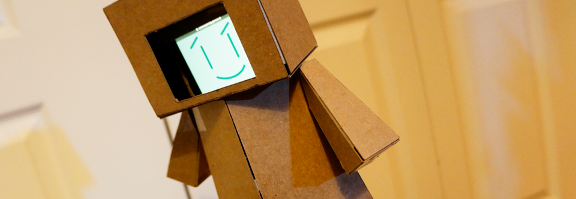
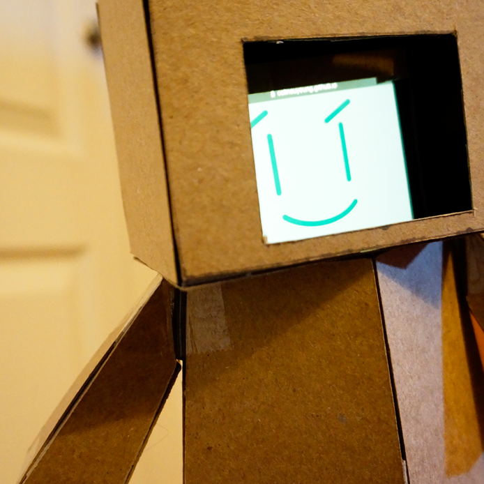
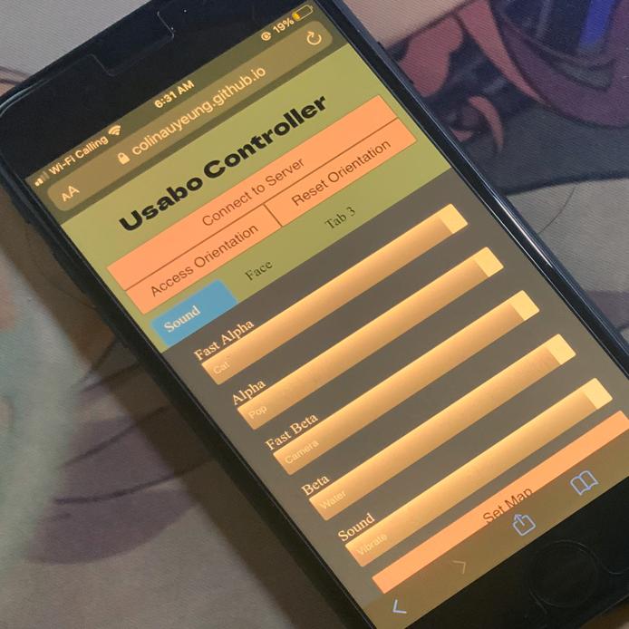
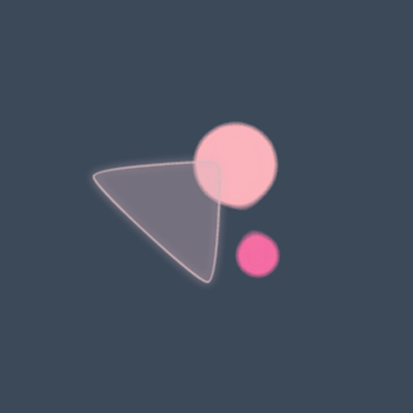
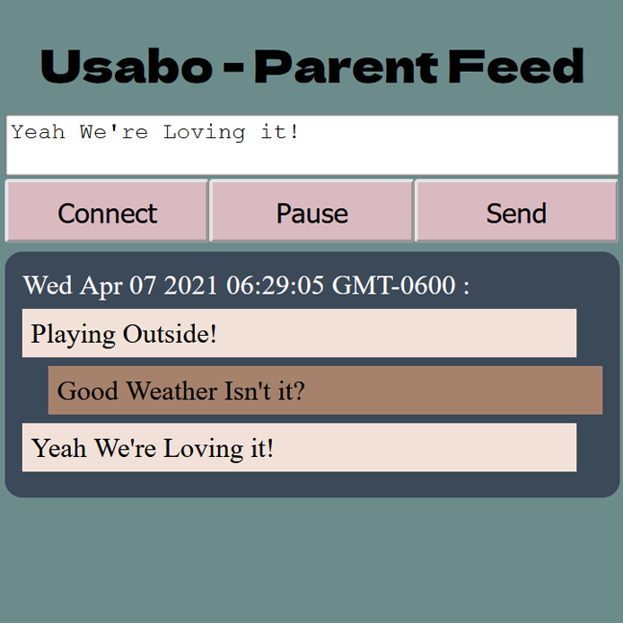

Usabo
CPSC 581 - Assignment 2
While video calls are a powerful tool for maintaining long distance relationships, the lack of physical presence can make it difficult for children to be able to connect to the people on the other side of the screen.
Usabo looks to bridge that gap by providing a physical proxy as a stand in for long distance relatives of children, in order to help foster strong relationships despite the distance between them.
Usabo uses a smartphone to create an augmented smart toy that can be used to create physical play experiences through video calls as well as being a persistent physical reminder for a child of their long distant relationships.
(sound effects from zapsplat.com)
Video Demo
How Does It Work

The Robot
In order to be as accessible as possible, Usabo consists only of a smartphone and a chipboard body. The chipboard is easy replace with thin cardboard and the body was designed to take minimal tools and skills to construct.
All it takes to make the robot shell of the toy is cardboard, a printer, tape and a knife (along with some patience)!
The instructions for the chipboard body can be found above.
Playtime - Controlling
During playtime, a long distance relative can take control of Usabo using the controller webapp. The controller can use physical actions with their phone to control the sounds that Usabo plays and the facial expressions that Usbao shows.
The mapping are customizable in order to allow the user to find the set up that allows that to fit both the controller user and the child that they are attempting to entertain.


Playtime - Feedback
Sometimes you lose sight of a toy (or a child!) on a video call, but no need to worry because that does not mean playtime has to end, Usabo also includes a simple visualization to provide feedback to the controller about
how the child is playing with the toy by mapping orientation and acceleration. That way you always have a little bit of insight to keep up the fun!
Beyond Playtime
But what happens when playtime ends? As a grandparent or a close relative of a child, playtime isn’t everything, especially with young children even the most mundane day to day things are meaningful as they learn more about the world they live in and the people around them.
Usabo remains a constant (if the child so desires of course) embodiment of you within the child's day to day life. Usabo provides you with updates about when they are getting played with to let you know when the child is thinking about you and their parents can help out by prodivind more context.

A subtle response
You can even change the face of Usabo to let them know, you are there with them.
Design Process
Initial Sketches


While my initial ideas went in alot of different directions, one constant theme of this project for me was needing to add some sort of physicality to the interaction. For example, both [1] and [3] look at thinking about taking makeshift objects and embedding some degree of smarts into the object to create either shared toys or shared physicality. [7] and [10] on the other hand, try to blend the virtual and the physical. In [7], we have a notion of a physical toy projected in a shared virtual space where the other participant can interact with. On the other hand [10] thinks about having the virtual objects that a participant interactions with affecting physical objects. [2] and [8] both look at ways of getting the long distance participants able to see from the perspective of the child. [5] looks at ways of sharing mundane memories and [4] takes physicality more metaphorically and thinks about turning sounds of one participant into virtual objects for the other. Finally [6] shows an early concept for Usabo.
Refining Usabo

These sketch start to think about how all the components of the system need to interact with each other in order to make Usabo work, in particular the types of data that need to be transmiited.


These show the different renditions of front end layout of Usabo. In particular [3,4,5] look at thinking about some sort of desktop site that allowed the customization features and some more fancier ways of visualizing this customization. [5] also shows off a different variantion I went with the motion controls and that was a tilt control for the face. I ultimately drop this because I though it would be too tedious to control. [6] shows a early sketch of the visualization I wanted to do for feedback from the toy. I stuck close to this design because I wanted to reuse alot of Project 0 to save time and it seemed to make sense.

These sketchs show the different variations I went through with designing the face of Usabo

Finally these sketches show the design concept for the Usabo body